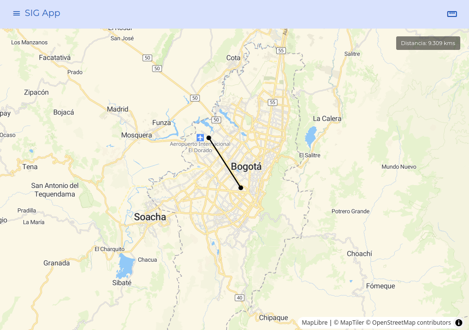
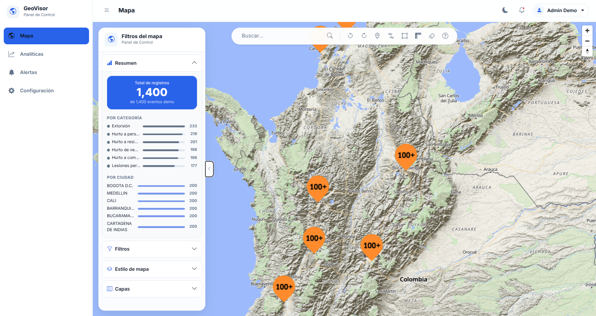

Geovisores Web
Visores cartográficos interactivos con Leaflet, OpenLayers, MapLibre y ArcGIS Maps SDK, conectados a servicios WMS/WFS y datos dinámicos.
Construyo aplicaciones web geográficas y modelos de inteligencia artificial aplicados a datos espaciales. Más de 5 años resolviendo problemas de catastro, ordenamiento territorial y avalúos con código.
Soy ingeniero catastral y geodesta especializado en el desarrollo de aplicaciones web y en soluciones de inteligencia artificial aplicada a datos espaciales (GeoAI). Trabajo en la frontera entre el análisis territorial y la ingeniería de software.
Actualmente en el Instituto Geográfico Agustín Codazzi, donde implemento flujos de computer vision para clasificación automática de coberturas vegetales y zonas geoeconómicas, diseño aplicaciones con ArcGIS Maps SDK y construyo tableros de control con indicadores de ordenamiento territorial.
Antes lideré el desarrollo de un SIG web y su infraestructura de datos espaciales para operaciones catastrales, y construí pipelines ETL en Python para capturar ofertas inmobiliarias masivas y mejorar la precisión de los avalúos prediales.

Soluciones geoespaciales a medida para entidades y organizaciones que necesitan extraer valor real de sus datos geográficos.
Visores cartográficos interactivos con Leaflet, OpenLayers, MapLibre y ArcGIS Maps SDK, conectados a servicios WMS/WFS y datos dinámicos.
Aplicaciones web geográficas completas con Angular, React y Node.js, integradas con bases de datos espaciales y servicios OGC.
Modelos de computer vision para clasificación de coberturas y detección de cambios, y análisis predictivo aplicado a procesos territoriales.
Diseño e implementación con PostgreSQL + PostGIS, modelado de datos catastrales e integración con SIG y formularios de campo.
Implementación de IDE corporativas para publicar y gobernar servicios web geográficos OGC con GeoServer, GeoNode, QGIS Server y ArcGIS Enterprise.
Tableros de control con Power BI y ArcGIS Dashboards, definición de indicadores y procesos ETL en Python para datos masivos.
Creación, edición, validación y procesamiento de información geográfica, con generación de cartografía digital a medida.
Asesoría técnica en proyectos geoespaciales: selección de tecnologías, arquitectura de solución y acompañamiento a equipos.
Demostraciones funcionales de las soluciones que desarrollo. Cada una es interactiva y se puede explorar en vivo.

La misma cartografía servida con cuatro librerías distintas, con capas WMS y datos geoespaciales dinámicos. Útil para comparar rendimiento y ergonomía de cada stack.

Aplicación completa con herramientas SIG avanzadas: análisis espacial, consulta de atributos y edición de datos en campo sobre una base espacial.

Panel de control geográfico con mapa interactivo, clustering de eventos por ciudad, filtros por categoría, resúmenes estadísticos, módulo de analíticas y alertas. Diseñado para la visualización y análisis de datos territoriales en Colombia.

Tengo agenda abierta para nuevos proyectos geoespaciales. Cuéntame qué necesitas y armamos juntos la solución.
Si quieres más información, una cotización o tienes una idea dando vueltas, escríbeme. Te respondo el mismo día.